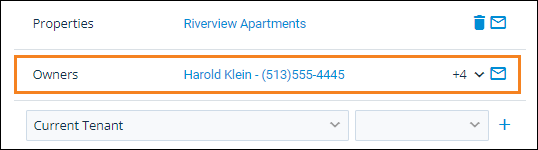

Service Issue Links (System Preferences)
Adjust these settings to set up link requirements or to automatically establish certain links on service issues.
Related Privileges
| Group | Privilege | Column |
|---|---|---|
| System | System Preferences | View, Edit |
For more information, refer to Control User Access.
To set these system preferences, do the following:
-
Go to
 arrow_forward
arrow_forward  Administration, then go to .
Administration, then go to . -
Edit the settings as desired. Each setting is described below.
-
Click Save to accept your changes.
Preference Descriptions
This preference group is divided into multiple sections. Each setting is described within the corresponding section below.
General
Select any of the following options to customize what links are available on issues.
| Option | Description |
|---|---|
|
Show Owner Information |
Check to display owner information when adding a Property link on a service issue. The owner information displays the Display Name and Default phone number entered on the owner's details page and a button to email the issue to the owner.
 |
|
Require a property link on all service issues |
Check to make adding a Property to the Links section of a service issue required. |
|
Require a unit link on all service issues |
Check to make adding a Unit to the Links section of a service issue required. More Information Enabling this option means that all inspections performed in rmAppSuite Pro must be linked to a unit before a service issue can be created. |
Auto Link Options
Select any of the following options to automatically create additional item links on service issues when a certain link is defined.
| Option | Description |
|---|---|
|
Property when tenant is linked |
Check to automatically link the Property of the tenant's unit when you add a Tenant link. More Information If a tenant has multiple units, this setting automatically selects the property of first unit listed in the Units section of the tenant's details page. Optionally, select a different property for the tenant. |
|
Unit when tenant is linked |
Check to automatically link the Unit of the tenant when you add a Tenant link. More Information If a tenant has multiple units, this setting automatically selects the first unit listed in the Units section of the tenant's details page. You can manually enter a different unit of the tenant. |
|
Property when unit is linked |
Check to automatically link the Property of the unit when you add a Unit link. |
|
Tenant when unit is linked |
Check to automatically link the Tenant/Prospect of the unit when you add a Unit link. If the unit has more than one current tenant, all current tenants are added. |
|
'Home' asset when tenant is linked |
Check to automatically link a home-type asset to an issue when you create a tenant link if that asset is located at the tenant's unit for which the issue is being generated. Rent Manager examines the current unit in the Asset Location section of the asset's details page. The asset must have the Track Financials option enabled to be linked. More Information Home-type assets are assets that have the option Assets of this type are homes enabled on their asset type. |
|
Home' asset when unit is linked |
Check to automatically link a home-type asset to an issue when you create a unit link if that asset is located at the unit for which the issue is being generated. Rent Manager examines the current unit in the Asset Location section of the asset's details page. The asset must have the Track Financials option enabled to be linked. More Information Home-type assets are assets that have the option Assets of this type are homes enabled on their asset type. |